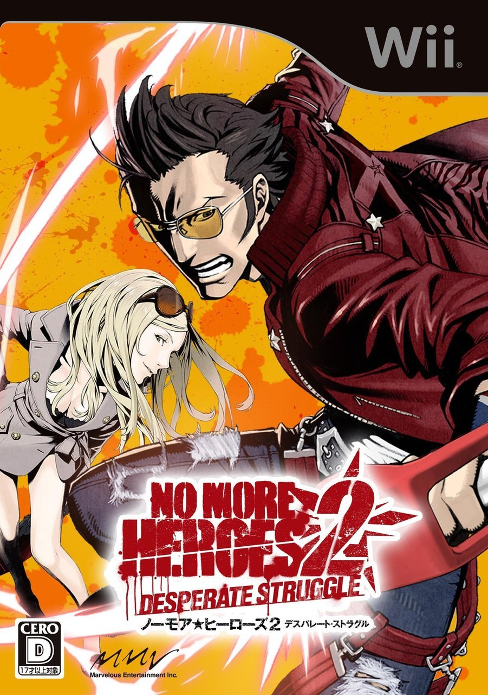

Sat, 18 Dec 2010 03:10:14 ·
me likey gameandgraphics no more heroes 2

Me likey!
No More Heroes 2: Desperate Struggle (Deluxe edition) japanese boxart - Grasshopper Manufacture for Wii, 2010.
One of the best games of the year. For gamers who like beat ‘em ups, lightsabers and Famicom graphics.